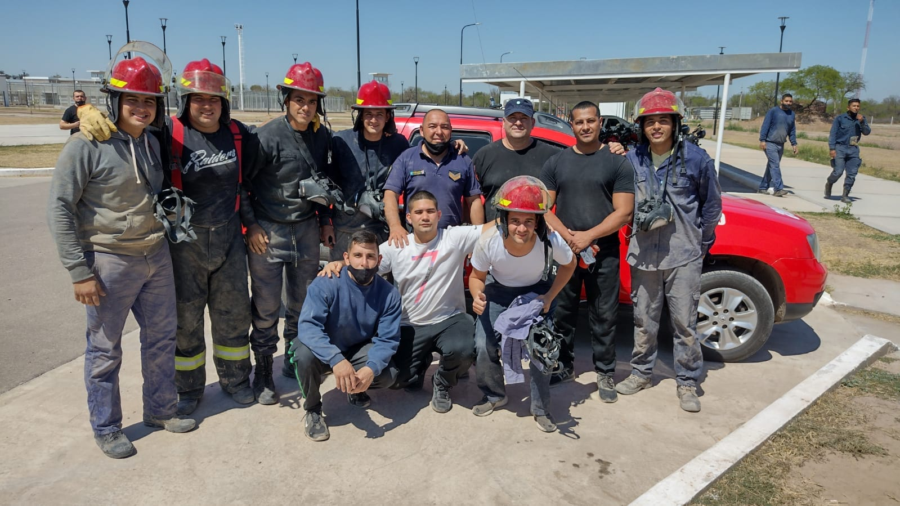

Publicado el 30 de Enero, 2025
El Servicio Penitenciario Provincial reafirma su compromiso con la seguridad y preparación de su personal. Recientemente, un grupo de valientes ha culminado exitosamente un curso intensivo de bomberos, adquiriendo habilidades cruciales para responder a emergencias y proteger a la comunidad penitenciaria.
El curso, impartido por expertos en la materia, abarcó tanto conocimientos teóricos como prácticos. Los participantes aprendieron sobre:
Esta capacitación fortalece la capacidad de respuesta del personal penitenciario ante cualquier eventualidad, garantizando un entorno más seguro para internos y trabajadores.
El Servicio Penitenciario Provincial continúa invirtiendo en la capacitación de su personal para construir un sistema penitenciario modelo en seguridad y profesionalismo.
Santiago del Estero, Argentina
Volver a Noticias